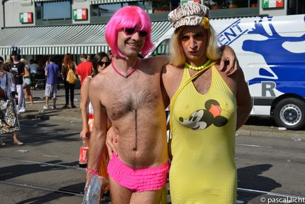
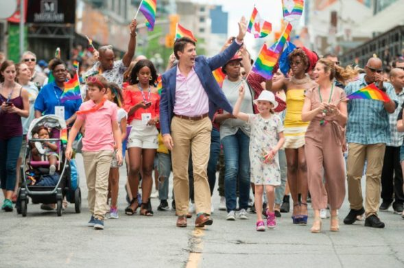
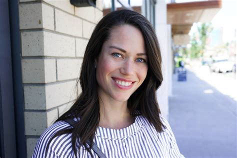
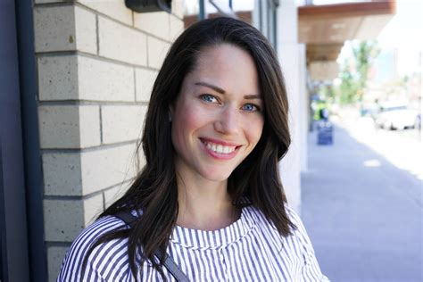
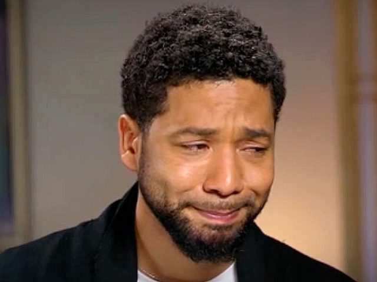
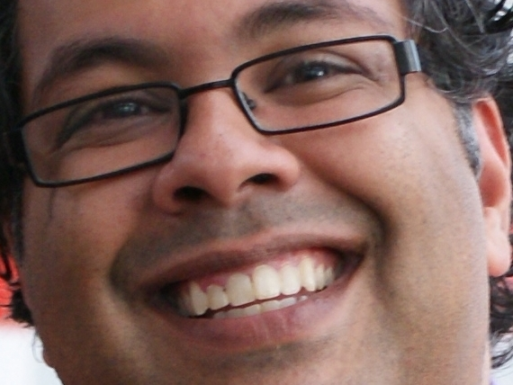
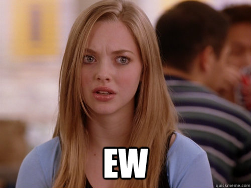
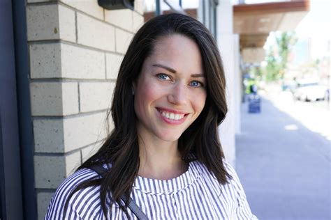

The Caylan Ford Affair - Part 1
November 19th, 2020
This is part one of a two part series on Caylan Ford. This first part is simply the backstory, to what has just happened less than a week ago, which I will be writing up tomorrow in Part 2. Here's a CBC article from March 19th, 2019, celebrating her "resignation."
CBC:
TDC_ARTICLE_START
A star UCP candidate — who resigned abruptly after the revelation she once lamented there was a double standard for white supremacist terrorists — also questioned whether there were any "redeeming values" in LGBTQ Pride parades, CBC News has learned.
CBC News has obtained Facebook chat messages that show Caylan Ford — who was the United Conservative Party candidate for Calgary-Mountain View until Monday night — was asked in 2017 for her "take" on Pride events.
She warned the person she was communicating with on Facebook Messenger that such a conversation was "better had not in text" and "ideally where you are playing the devil's advocate."
"Why would one march in Pride?" wrote Ford.
"I mean, they trace their origins to the Stonewall riots, then emerged as a celebration of vice and transgression. What are the redeeming values?"
Ford, who has a master's degree from Oxford among other accomplishments, went on to say it was not a rhetorical question and she wanted to "hear an argument."
TDC_ARTICLE_STOP
These are all legitimately things that 70% of people believe. Having a fetish for a man's asshole, is nothing to be proud of. Hell, having a fetish for sucking on cute girls toes is nothing to be proud of, and that's 100x more normal.

Weird, but funny
So why would someone march in Fetish Pride? Well to signal that they are a spiteful mutant. Why would a society tolerate Fetish Pride? Well because this gets forced down the Peasants throats by the Privileged.
Freak, not funny
And I can't just let this go. Here's a picture of Joffrey Trudeau attending the Toronto Fetish Parade. He took his children. He wore "muslim socks," whatever that means. The point is not the contradictory nature of these things, the point is to show that his daddy was Prime Minister, and yours was a carpenter. So fuck you peasant.
I've actually always felt really bad for his son
TDC_ARTICLE_START
CBC News has seen and verified the Facebook Messenger discussion. The messages were provided by a source, described as a longtime Muslim conservative with deep ties in the party, to whom CBC News has granted confidentiality.
TDC_ARTICLE_STOP
Longtime muslim conservatives have deep ties in the United Conservative Party. Such deep ties that they can get a very popular White Woman kicked out of the party over text messages. Even when the content of said text messages are something that are popular not just for the voters for said Donor-Right Party, but amongst the populace more broadly.
 TDC_ARTICLE_START
CBC reached out to Ford about the Pride parade message but she declined to comment on the record.
TDC_ARTICLE_STOP
Good for you Caylan, never talk to these people.

TDC_ARTICLE_START
CBC reached out to Ford about the Pride parade message but she declined to comment on the record.
TDC_ARTICLE_STOP
Good for you Caylan, never talk to these people.
Caylan Ford
TDC_ARTICLE_START
In one exchange, Ford lamented that white supremacist terrorists face a double standard compared to Islamic terrorists.
"When the perpetrator is an Islamist, the denunciations are intermingled with breathless assurances that they do not represent Islam, that Islam is a religion of peace, etc.," Ford wrote.
"When the terrorists are white supremacists, that kind of soul-searching or attempts to understand the sources of their radicalization or their perverse moral reasoning is beyond the pale."
Later in the exchange, Ford said: "I am somehow saddened by the demographic replacement of white peoples in their homelands…. It's clear that it will not be a peaceful transition."
TDC_ARTICLE_STOP
Jussie Smollett, literally fake and gay
This is a classic example of a fake and gay propaganda line. First, this is fake because she's clearly being taken out of context. Second, this is gay, because what she's saying is obviously true. Muslims murder 10 White People, and the Propagandists make excuses. James Fields gets in a car accident, "oh my gaawwwwdd, let's condemn White People."
Also, there were no "white supreeeeemacist terrorists," at Charlottesville. Everybody who was there knows that Antifa, a zionist terrorist organization, and BLM, an anti-white terrorist organization, went there to do violence to the Patriotic Americans protesting the illegal removal of Confederate Monuments. And James Fields is in jail for 419 years because his car drove into a crowd and a fat bitch named Heather Heyer had a heart attack while watching.
Said landwhale, Heather Heyer
TDC_ARTICLE_START
Late Monday night, after the messages went public, Ford announced on her Facebook page that she was giving up her bid for a seat in the Alberta Legislature.
In the Facebook post announcing her resignation, Ford said her remarks on terrorism had been taken out of context.
"To avoid becoming a distraction in this campaign, I have decided to resign as the United Conservative candidate in Calgary–Mountain View," she said in the post.
TDC_ARTICLE_STOP

Hitler's face when you resign without a fight
Oh FFS. I know this happened a year and a half ago, but I really just can't get over this. Caylan Ford is a sweet woman, and sweet woman should not be in politics. Not because they aren't great people, but precisely because they are. I can guarantee you that behind the scenes at UCP they were saying things like "well you know, it's better for the party if you would resign," or "you're harming the party," or other words that are likely to make an honest decent woman do what they say.
Myself, I wouldn't be a part of any Donor-Right Party in the first place, but I guarantee you I would go down swinging. Assuming I somehow found myself in that situation. Then I would start a rival political party, and get at least enough seats to destroy the UCP, and prevent them from ever having political power. Because power is about making examples of your enemies, not resigning yourself to this "lesser of two evils," shit.
TDC_ARTICLE_START
On whether she made the remarks, Ford said: "I can't speak to the authenticity of them. These are fragments of a conversation that was held years ago that were selected to maximize damage to me…. I'm not interested in attempting to explain or rationalize what's the context of an academic discussion."
The controversy came just as UCP Leader Jason Kenney rallied his troops in response to the NDP throne speech on Monday and Rachel Notley's Tuesday call for a provincial election, set for April 16.
She appeared with Jason Kenney in a video on her Facebook page last month, where the UCP leader touted her as a "remarkable" candidate.
"You are what I call the personification of the new generation of leadership," Kenney said in the video.
Asked about Ford's resignation as he made a campaign announcement Tuesday in Leduc, Alta., Kenney said she did the right thing by choosing to get out of the race.
"Let me be clear: I condemn the remarks included in the text that she sent," he said.
Kenney rejected the suggestion that the controversy demonstrates the UCP is a magnet for people with extremist views, saying his party is inclusive and broad and had more diversity among its Edmonton candidates than in the NDP provincewide.
Kenney added that he was surprised by Ford's comments given her extensive education, her time working for the United Nations and her interest in the Chinese religious spiritual practice of Falun Gong.
"So I found her comments completely inexplicable," he said.
TDC_ARTICLE_STOP
Yeah fuck this guy. Jason Kenney is one of the absolute shittiest Shabbos Goy Donor Puppets in Canadian Politics, and that's saying something. This guy is so fuckingbad it blows my mind. He is just on a new level of bad. This is a guy whose main issue is flooding nice White Towns with literal Somali Migrants in order to make his donors a few shekels more. Just a level of being a piece of shit, that shouldn't even be possible.

Jason Kenny, UCP Leader
TDC_ARTICLE_START
Calgary Mayor Naheed Nenshi said he was glad Ford has dropped out of the race, but questioned why her response to the controversy did not include an apology.
"It was absolutely the right thing to step down, because clearly someone who expresses thoughts like that, no matter how academic or no matter how fancy [the] words you use, is not fit to lead a diverse community like this," Nenshi said.
Mount Royal University political scientist Duane Bratt said Ford likely didn't make the decision alone.
"She says that her statements were taken out of context…. I have no doubt that the UCP brass have urged her to resign," he said.
TDC_ARTICLE_STOP
First of all, I had no idea that Calgary had a mayor named "Naheed Nenshi."


But I have to say that my thoughts definitely mirror Duane Bratt, and this has been all but confirmed by Ford herself, which we'll see in tomorrow's article. There was clearly political pressure put on her by UCP, as part of their honestly quite successful effort to drum out anything even approaching pro-white or anti-degeneracy sentiment on behalf of their donors.
So, what happens now? Well this story doesn't end here. In fact, Ford has recently fought back against this with a very interesting lawsuit, which I will be covering tomorrow.
Stay tuned.
TDC_ARTICLE_START
CBC reached out to Ford about the Pride parade message but she declined to comment on the record.
TDC_ARTICLE_STOP
Good for you Caylan, never talk to these people.
